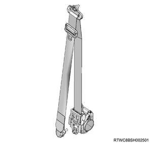
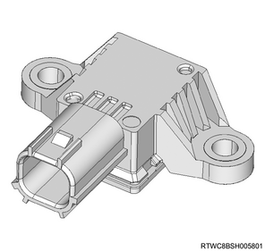

Function, structure, operation of restraint (All models)
1. Function, structure, operation of restraint
SRS airbag system (Driver airbag and passenger airbag)
The SRS airbag system consists of the following parts to form a deployment circuit. Front airbag sensors are installed in the vehicle. Also, a G sensor is also built into the SRS control unit. When both the front airbag sensors and the G sensor in the ECU detect a frontal collision, the SRS airbag and the pretensioner are activated to protect the passenger. Also, the SRS deployment signal is sent to the BCM to release all the door locks.
When the SRS control unit detects a malfunction in the SRS system, it illuminates the SRS airbag warning light in the instrument panel cluster.
Note
- The illustration shows an RHD model.
- Front airbag sensor
- Driver airbag
- Seat belt with pretensioner
- SRS control unit
- Passenger airbag
SRS airbag system (Model with side airbag and curtain airbag)
Models with side airbags and curtain airbags in addition to the above system provide safety in side collisions. The vehicle consists of the following components that form the deployment circuit.
Note
- The illustration shows an RHD model.
- The lap pretensioners are only equipped on models for Australia.
- Front airbag sensor
- Driver airbag
- Seat belt with pretensioner, lap pretensioner
- SRS control unit
- Passenger airbag
- Door side airbag sensor
- Side airbag sensor
- Curtain airbag
- Side airbag
SRS airbag deployment (Driver airbag and passenger airbag)
In case of a frontal collision, the driver airbag and the passenger airbag are deployed, and the driver side and passenger side seat belts with pretensioner and lap pretensioners are activated.
SRS airbag deployment (Side airbag and curtain airbag)
In the event of a side collision, the curtain airbag and side airbag on the collision side are deployed, and the driver side and passenger side seat belts with pretensioner are activated. The lap pretensioner is also activated in models for Australia.
SRS control unit
The SRS control unit has the following features.
Energy backup
The SRS control unit stores the energy required for deploying the airbag when the ignition voltage is lost by a collision.
Collision detection
The SRS control unit monitors impacts and detects collisions that require deployment of the airbag.
SRS airbag deployment
Upon detecting a collision greater than a certain level, the SRS control unit sends to the SRS airbag assembly the current enough to deploy the SRS airbag.
Functional failure detection
The SRS control unit diagnoses electrical parts in this system and sets a DTC when it detects a functional failure.
Functional failure diagnosis
The SRS control unit displays the DTC and system operation status using the scan tool.
Warning to the driver
The SRS control unit warns the driver of the functional failure in this system by illuminating the SRS airbag warning light.

Note
- SRS control unit schematic circuit diagram (Vehicles only equipped with a driver airbag and passenger airbag)
Note
- Pin layout (Vehicles only equipped with driver airbag and passenger airbag)
| A-1 | Driver side seat belt with pretensioner High |
| A-2 | Driver side seat belt with pretensioner Low |
| A-3 | Passenger side seat belt with pretensioner Low |
| A-4 | Passenger side seat belt with pretensioner High |
| B-1 | Front airbag sensor (Left) - |
| B-2 | Front airbag sensor (Left) + |
| B-3 | Front airbag sensor (Right) - |
| B-4 | Front airbag sensor (Right) + |
| B-5 | Driver airbag Low |
| B-6 | Driver airbag High |
| B-7 | Passenger airbag High |
| B-8 | Passenger airbag Low |
| B-9 | SRS airbag warning light |
| B-10 | － |
| B-11 | Vehicle model identification terminal |
| B-12 | － |
| B-13 | － |
| B-14 | Driver seat belt switch |
| B-15 | － |
| B-16 | Diagnostic switch |
| B-17 | Ignition voltage |
| B-18 | － |
| B-19 | Deployment signal |
| B-20 | CAN high |
| B-21 | CAN low |
| B-22 | － |
| B-23 | GND |
Note
- SRS control unit schematic circuit diagram (Models with side airbags and curtain airbags)
- Except for Australia
Note
- Pin layout (Models with side airbag and curtain airbag)
- Except for Australia
| A-1 | Left side seat belt with pretensioner High |
| A-2 | Left side seat belt with pretensioner Low |
| A-3 | Right side seat belt with pretensioner Low |
| A-4 | Right side seat belt with pretensioner High |
| A-5 | Side airbag (Left) High |
| A-6 | Side airbag (Left) Low |
| A-7 | Side airbag sensor (Right) + |
| A-8 | Side airbag sensor (Right) - |
| A-9 | Side airbag sensor (Left) + |
| A-10 | Side airbag sensor (Left) - |
| A-11 | Passenger seat belt switch |
| A-12 | － |
| A-13 | Side airbag (Right) High |
| A-14 | Side airbag (Right) Low |
| A-15 | － |
| A-16 | － |
| B-1 | － |
| B-2 | － |
| B-3 | － |
| B-4 | － |
| B-5 | Driver airbag Low |
| B-6 | Driver airbag High |
| B-7 | Passenger airbag High |
| B-8 | Passenger airbag Low |
| B-9 | SRS airbag warning light |
| B-10 | － |
| B-11 | Vehicle model identification terminal |
| B-12 | Vehicle model identification terminal |
| B-13 | － |
| B-14 | Driver seat belt switch |
| B-15 | － |
| B-16 | Diagnostic switch |
| B-17 | Ignition voltage |
| B-18 | － |
| B-19 | Deployment signal |
| B-20 | CAN high |
| B-21 | CAN low |
| B-22 | － |
| B-23 | GND |
| C-1 | Curtain airbag (Right) High |
| C-2 | Curtain airbag (Right) Low |
| C-3 | Curtain airbag (Left) Low |
| C-4 | Curtain airbag (Left) High |
| C-5 | － |
| C-6 | － |
| C-7 | Front airbag sensor (Right) + |
| C-8 | Front airbag sensor (Right) - |
| C-9 | Front airbag sensor (Left) + |
| C-10 | Front airbag sensor (Left) - |
| C-11 | Door side airbag sensor (Right) - |
| C-12 | Door side airbag sensor (Right) + |
| C-13 | － |
| C-14 | － |
| C-15 | Door side airbag sensor (Left) - |
| C-16 | Door side airbag sensor (Left) + |
Note
- SRS control unit schematic circuit diagram (For Australia)
Note
- Pin layout (Models for Australia)
| A-1 | Left side seat belt with pretensioner High |
| A-2 | Left side seat belt with pretensioner Low |
| A-3 | Right side seat belt with pretensioner Low |
| A-4 | Right side seat belt with pretensioner High |
| A-5 | Side airbag (Left) High |
| A-6 | Side airbag (Left) Low |
| A-7 | Side airbag sensor (Right) + |
| A-8 | Side airbag sensor (Right) - |
| A-9 | Side airbag sensor (Left) + |
| A-10 | Side airbag sensor (Left) - |
| A-11 | Passenger seat belt switch |
| A-12 | － |
| A-13 | Side airbag (Right) High |
| A-14 | Side airbag (Right) Low |
| A-15 | － |
| A-16 | － |
| B-1 | － |
| B-2 | － |
| B-3 | － |
| B-4 | － |
| B-5 | Driver airbag Low |
| B-6 | Driver airbag High |
| B-7 | Passenger airbag High |
| B-8 | Passenger airbag Low |
| B-9 | SRS airbag warning light |
| B-10 | － |
| B-11 | － |
| B-12 | Vehicle model identification terminal |
| B-13 | Vehicle model identification terminal |
| B-14 | Driver seat belt switch |
| B-15 | － |
| B-16 | Diagnostic switch |
| B-17 | Ignition voltage |
| B-18 | － |
| B-19 | Deployment signal |
| B-20 | CAN high |
| B-21 | CAN low |
| B-22 | － |
| B-23 | GND |
| C-1 | Curtain airbag (Right) High |
| C-2 | Curtain airbag (Right) Low |
| C-3 | Curtain airbag (Left) Low |
| C-4 | Curtain airbag (Left) High |
| C-5 | Lap pretensioner (Left) High |
| C-6 | Lap pretensioner (Left) Low |
| C-7 | Front airbag sensor (Right) + |
| C-8 | Front airbag sensor (Right) - |
| C-9 | Front airbag sensor (Left) + |
| C-10 | Front airbag sensor (Left) - |
| C-11 | Door side airbag sensor (Right) - |
| C-12 | Door side airbag sensor (Right) + |
| C-13 | Lap pretensioner (Right) High |
| C-14 | Lap pretensioner (Right) Low |
| C-15 | Door side airbag sensor (Left) - |
| C-16 | Door side airbag sensor (Left) + |
SRS airbag warning light
When the ignition switch is set to the ON or START position, the SRS airbag warning light is controlled by the SRS control unit in the following manner.
When the ignition switch is turned ON for the first time, the SRS airbag warning light flashes 7 times to verify the operation of the SRS airbag warning light and the SRS control unit.
The driver is warned of functional failures in the electrical system of this system. Such functional failures may cause undeployment of the airbag or unnecessary deployment of the airbag during a collision.
The SRS airbag warning light warns the driver of functional failures in this system. Refer to the diagnostic system check-SRS controls for information on proper operation of the warning light.
SRS coil assembly
The SRS coil assembly is installed to the steering column and makes the steering wheel rotate while maintaining continuous conductivity between the activation circuit and SRS airbag.
There is a shorting clip located at the connection of the SRS harness connector for the combination switch.
When the yellow connector is removed, the shorting clip shorts the SRS airbag. Shorting the SRS airbag circuit prevents unnecessary activation of the SRS airbag when performing maintenance of the steering column or other SRS parts.
- SRS coil assembly
- Steering angle sensor
- Combination switch
Note
- The steering angle sensor is available only for vehicles with ESC.
SRS airbag assembly
The SRS airbag assembly consists of an airbag and an inflator. The SRS control unit sends a current to the deployment circuit when a frontal collision with an impact larger than a certain level occurs. The current flowing in the inflator ignites the gas generating agent in the airbag.
The gas generated from this reaction rapidly expands the airbag. The airbag connector is equipped with a shorting clip. When the airbag connector is removed, the shorting clip shorts the airbag circuit.
The circuit to the airbag is shorted in such a way that unnecessary deployment of the airbag is prevented when conducting maintenance of the airbag assembly, steering column, or other system parts.
Note
- Airbag assembly (Driver side)

Note
- Airbag assembly (Passenger side)
SRS airbag assembly (Model with side airbag and curtain airbag)
Models with side airbags and curtain airbags in addition to the above system provide safety in side collisions. The SRS control unit sends a current to the deployment circuit when a side collision with an impact larger than a certain level occurs.
Note
- Side airbag
- Side airbag
The side airbag cannot be replaced as a separate unit. The seat assembly must be replaced.
Note
- Curtain airbag
Note
- Curtain airbag mounting position
- Curtain airbag
Seat belt with pretensioner (Except for Australia)
The seat belt with pretensioner consists of the seat belt and the gas generator section.
The SRS control unit drives the deployment circuit when the vehicle receives an impact larger than a predetermined level in a collision. The gas generator section of the seat belt with pretensioner is then ignited. Gas generated by this ignition retracts loose areas of the seat belt with pretensioner and firmly restrains the driver's upper body.

Seat belt with pretensioner and lap pretensioner (For Australia)
The seat belt with pretensioner and lap pretensioner consists of the seat belt and the gas generator section.
The SRS control unit drives the deployment circuit when the vehicle receives an impact larger than a predetermined level in a collision. The gas generator section of the seat belt with pretensioner and lap pretensioner is then ignited. Gas generated by this ignition retracts loose areas of the seat belt with pretensioner and lap pretensioner and firmly restrains the driver's upper body.
Note
- Seat belt with pretensioner and lap pretensioner

- Seat belt with pretensioner
- Lap pretensioner
Front airbag sensor
The front airbag sensors are installed inside the front bumper. The sensors are installed in the positions indicated in the illustration, each one on the right and left sides. They detect frontal collisions and send signals to the SRS control unit.
Note
- Front airbag sensor mounting position
- Front airbag sensor (Right side)
Side airbag sensor
The side airbag sensors are installed inside the rear pillar trim. The sensors are installed in the positions indicated in the illustration, one each on the right and left sides. They detect side collisions and send signals to the SRS control unit.
Note
- Side airbag sensor mounting position

- Side airbag sensor
Door side airbag sensor
The door side airbag sensors are installed inside the front doors. The sensors are installed in the positions indicated in the illustration, one each on the right and left sides. They detect side collisions near the door and send signals to the SRS control unit.

Note
- Door side airbag sensor mounting position